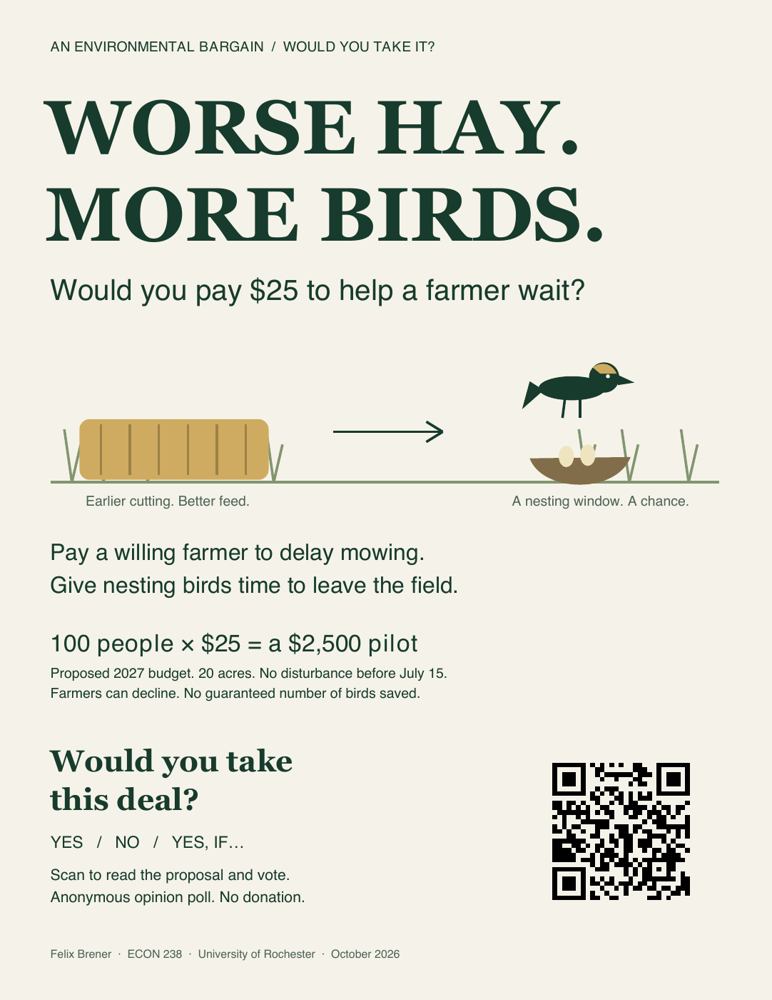

This is a digital poster for an ECON238 student proposal. A digital posting does not fulfill the assignment's printed-poster or one-week physical-display requirement. No physical display is claimed.